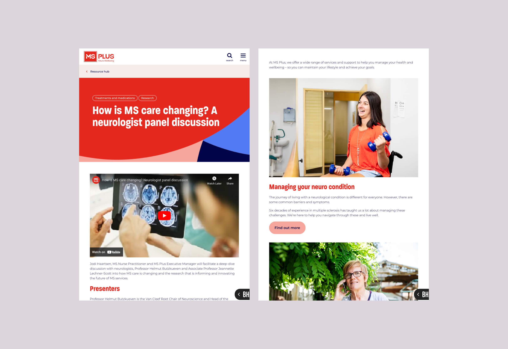
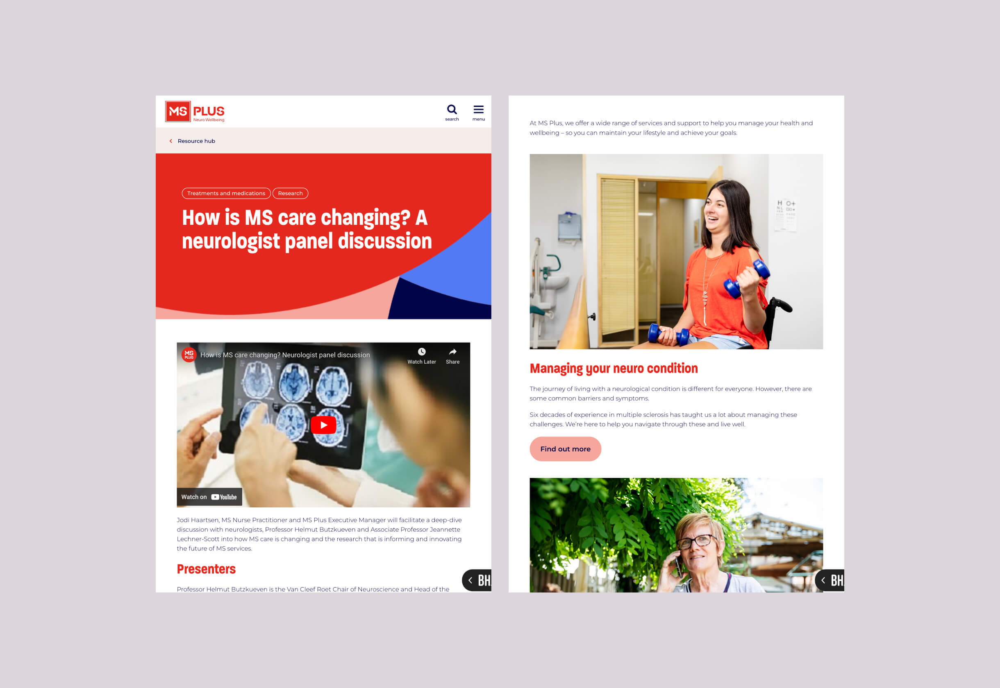
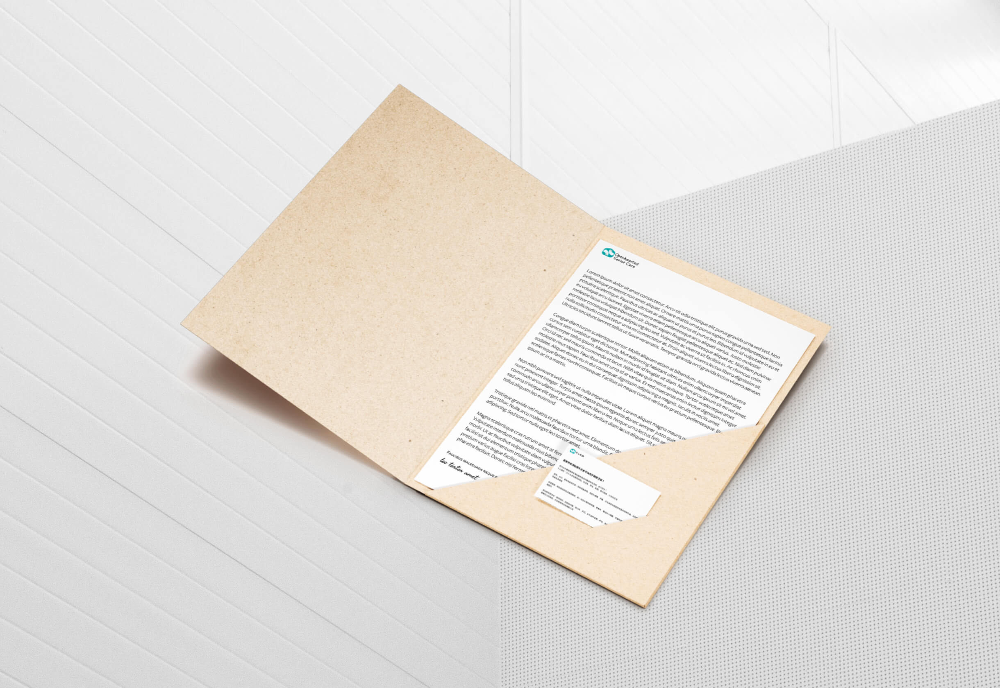
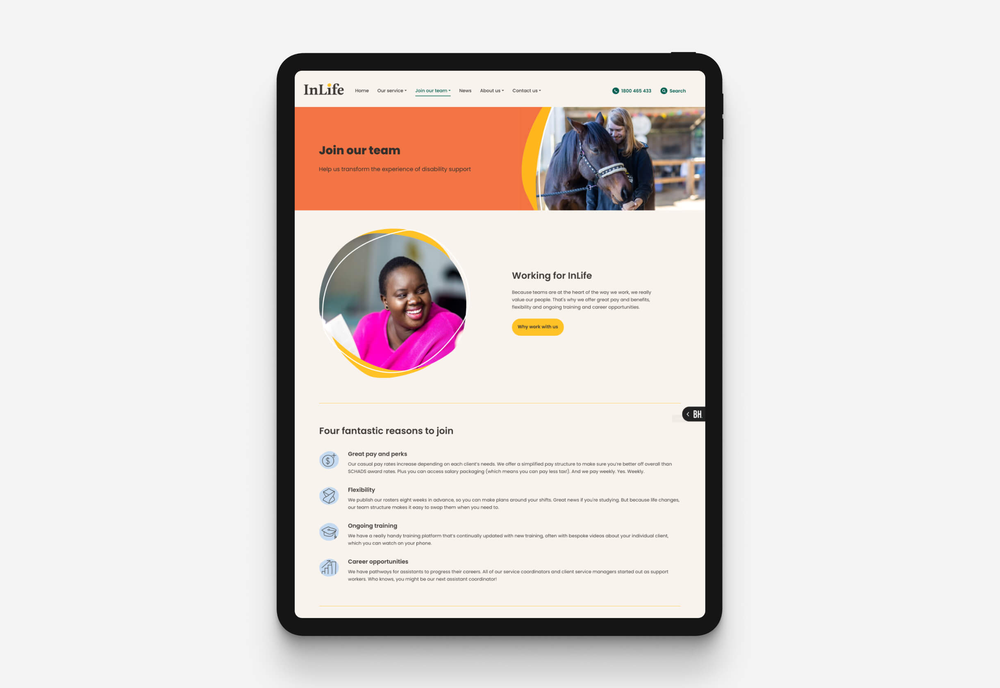
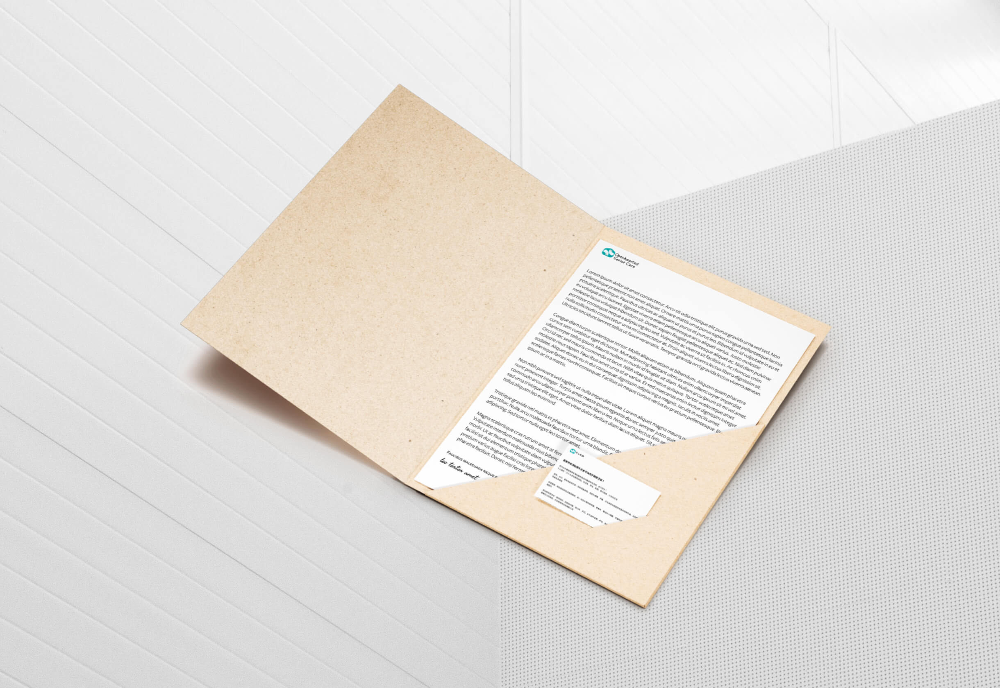
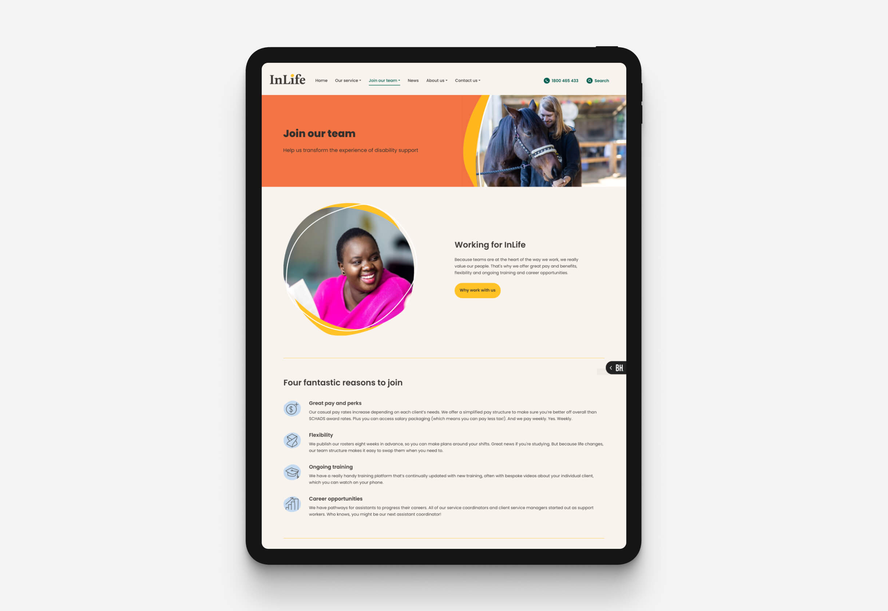
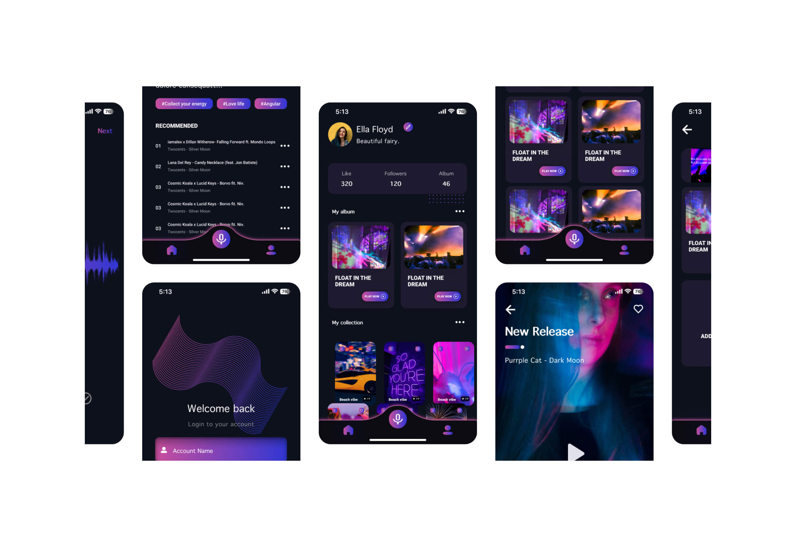
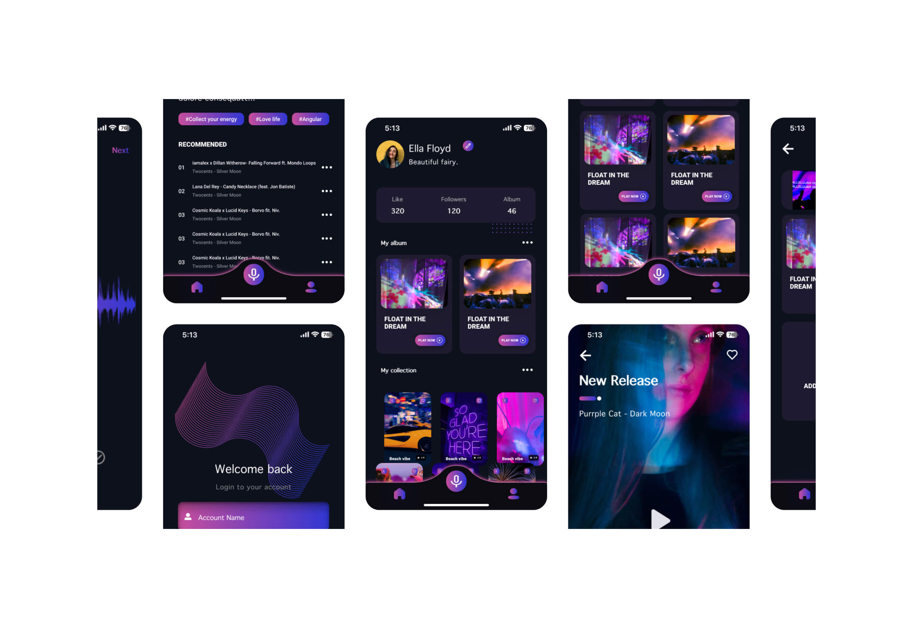

08 design highlights
 

2020-2023
UX/UI Designer
These works reflect my journey across various roles, from collaborating with teams on diverse projects to freelancing. These experiences have provided invaluable opportunities to apply the design skills I developed during my studies at art college, allowing me to experiment with creative solutions and deepen my understanding of visual design principles.
Along the way, I’ve also gained a wealth of professional insights. Collaborating with talented designers has been enriching, and I’m especially grateful to the mentors who guided me. Their advice and support have been instrumental in shaping my approach to design and fostering my growth as a professional.

 



 


UX/UI DESIGNER
Harry is a UX/UI designer who crafts intuitive, high-performance websites that align with business goals. With expertise in UX research, wireframing, prototyping, and UI design, he creates seamless, user-focused experiences.
His superpower is the ability to deeply understand business needs and transform them into effective design solutions, supported by a structured work pipeline. He is business-driven, with a strong focus on critical reviews, iteration, and design systems to ensure consistency across all projects.